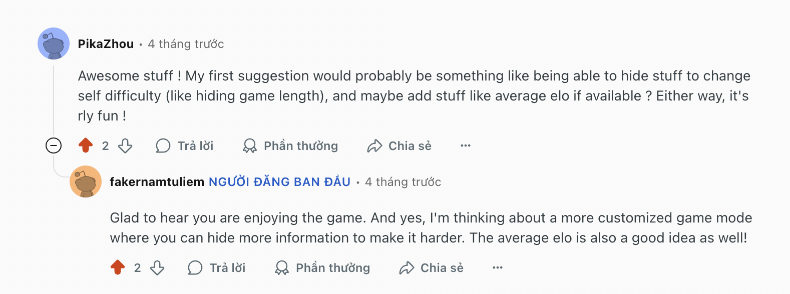
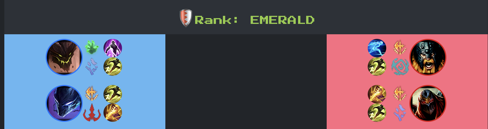
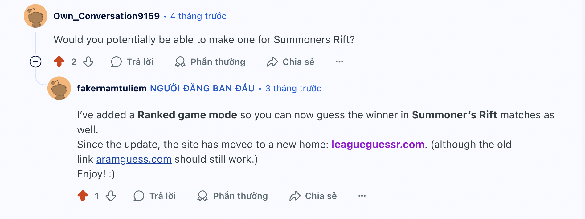
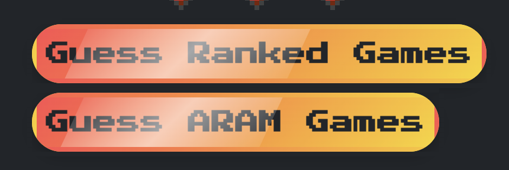

I created a League of Legends mini-game with 25,000+ users.
And here's what I've learned
I launched leagueguessr.com, a mini-game about League of Legends, back in May 2025. If you don't know anything about League of Legends, it is a MOBA video game that pits 2 teams, each consists of 5 players, against each other. The first thing that you have to do in League is called "drafting”, aka when each player chooses a character (or “champion”, in League’s terms) that they want to play. Each champion in League of Legends has unique abilities—some work well together due to strong synergy, while others are effective at countering specific opponents. So a significant part of the game outcome is already determined at draft, because a better team composition gives you a better chance to win.
leagueguessr.com simply lets you guess which team you think would win based on their champion picks. Afterwards, the winning team is revealed. You can only make 3 wrong guesses before the game’s over.
Ever since launch, the game has had 25,000+ users, around 200,000+ guesses made, and I think the most special moment was when the game was featured on Caedrel’s Twitch stream (1 million+ subscriber streamer).
Why I made this game
I started playing League of Legends since 2019, and I’ve probably put more hours into League of Legends than most other hobbies in my life. I’m quite passionate about the game, and it naturally occurred to me that I should make a programming project about something I enjoyed.
In the game drafting phases, I usually had debates with my friends about which champion we should select. Knowing what champion to pick is actually quite hard, because there are many factors to consider. You have to think about what champions your team already has, so you can pick something that synergizes well with the rest of the team. You also have to think about what champion the enemy team has, so you can choose something that counters the other team.
We debated so much that one some point, I thought to myself: “Why don’t I just pull all the past League matches’ data (champion picks, game outcome, etc), and then try to guess which team wins only based on the champions picked? That would test whether my understanding of champion pick is good or not.”
That’s how this game started. It started as a way for me and my friends to settle our very own debate about which champions we should pick.
Technical challenges
Store games in the database or fetch on demand?
There are two ways to get a random League of Legends game for users to guess.
Fetch game on-demand, using public League of Legends API. The server sends requests to the League of Legends API every time a user asks for a new game.
Pre-fetch and store a large amount of games into a local database. Fetch games from the database every time the user asks for a new game.
Each method has its pros and cons.
The second method (database storage)’s advantage is that fetching from database is much faster compared to fetching from API, since API speed also depends on your network capacity, whereas the database can be hosted on the same server as your backend.
A serious downside of the first method (on-demand fetch) is that League of Legends API has rate limiter, e.g. they only allow 20 requests per second. Imagine if you have 30 users requesting a new question at a time. That would cause the server to slow down, because it has to wait for the rate limiter.
All things considered, I went with the second method.
Optimize the database
The game’s mechanism is quite simple.
I pulled around 10,000+ League of Legends game played over the last 2 weeks from Riot API, stored them into the database, and then displayed a random game for each guess.
A natural question arises: how do we store the game’s information (the players, the outcome, etc) in the database.
In the first iteration of this project, the UI simply shows the 10 champions picked, the duration of the game, and asks users to guess. After that, the UI displays the result, either the user makes a right or wrong guess.
An intuitive representation of the game in SQL is like this:
MariaDB [lolforecast]> describe game_data;
+----------------+--------------+------+-----+---------+-------+
| Field | Type | Null | Key | Default | Extra |
+----------------+--------------+------+-----+---------+-------+
| gameId | varchar(255) | NO | PRI | NULL | |
| gameStartTime | bigint(20) | YES | | NULL | |
| champion1 | varchar(255) | YES | | NULL | |
| champion2 | varchar(255) | YES | | NULL | |
…
| champion10 | varchar(255) | YES | | NULL | |
| summonerName1 | varchar(255) | YES | | NULL | |
| summonerName2 | varchar(255) | YES | | NULL | |
….
| summonerName10 | varchar(255) | YES | | NULL | |
| blueWins | tinyint(1) | YES | | NULL | |
+----------------+--------------+------+-----+---------+-------+You simply have one row per game, each game should have an ID, 10 champions in the game, 10 League of Legends usernames, and finally the outcome of the game.
However, simply knowing your guess is right or wrong isn’t very interesting. What’s interesting and perhaps even educational is knowing where your guess has gone wrong. Therefore, I wanted to add a few post-game statistics after the user made a guess, e.g. each player’s KDA (kill/death/assist) record, their item build, how much damage they have done, how much damage they have taken. This gives the users a better understanding of what actually happened in the game, and whether the flow of the game went accordingly with their initial prediction.
So a significant part of information about 10 players need to be added. Each player needs to have more fields, such as KDA, items, etc.
Now, the original database design doesn’t work so well anymore. If we keep the original database, then we need to add at least 20 fields per player to this table. That would result in a table with more than 200 fields.
A better alternative would be to create a separate table that stores just the player’s information. This table would look something like this:
MariaDB [lolforecast]> describe game_players;
+----------------+--------------------+------+-----+---------+----------------+
| Field | Type | Null | Key | Default | Extra |
+----------------+--------------------+------+-----+---------+----------------+
| id | int(11) | NO | PRI | NULL | auto_increment |
| game_id | varchar(255) | YES | MUL | NULL | |
| player_index | tinyint(4) | YES | | NULL | |
| summoner_name | varchar(255) | YES | | NULL | |
| champion_name | varchar(255) | YES | | NULL | |
| team | enum('blue','red') | YES | | NULL | |
| kills | tinyint(4) | YES | | NULL | |
| deaths | tinyint(4) | YES | | NULL | |
| assists | tinyint(4) | YES | | NULL | |
| spell1 | varchar(50) | YES | | NULL | |
| spell2 | varchar(50) | YES | | NULL | |
| primary_rune | varchar(50) | YES | | NULL | |
| secondary_rune | varchar(50) | YES | | NULL | |
| item0 | varchar(100) | YES | | NULL | |
| item1 | varchar(100) | YES | | NULL | |
| item2 | varchar(100) | YES | | NULL | |
…
| item6 | varchar(100) | YES | | NULL | |
| damage_dealt | int(11) | YES | | NULL | |
| damage_taken | int(11) | YES | | NULL | |
+----------------+--------------------+------+-----+---------+----------------+Essentially, I put each player instance in this game_player table, and each instance is associated with a gameID. The game table only needs to store game-specific information (game duration, game outcome, etc).
I don’t need another 200 fields in the game table, instead I just simply created another table for each player instance.
How many users have used my website?
One issue I ran into is counting the users that visited my website. I came up with 2 methods to do this:
Count up all the unique IP addresses in nginx log.
Assign an anonymous token for each user the first time they used the website. Store that token in their browser’s localStorage and on our database.
Each method has different tradeoffs:
The first method’s disadvantage is that if a user switches their location—let’s say they go from their apartment to their work office, their IP addresses are going to change. So one user could accidentally count as 2-3 users if we just look at the IP addresses.
The second method wouldn’t run into this issue, because the token is stored in the browser’s localStorage regardless of which network router they are on. The only issue is when they use different browsers (multiple tokens would be assigned to one user) or when they clear their localStorage (unlikely that the average Internet user would do this, but not impossible).
In the end, I used both methods and the results were quite interesting: both methods yield the same amount of users (25k-ish). So even though I don’t truly know the exact number of players, a reliable estimate would be 25k+.
Preventing users from cheating using API call
I have a POST API endpoint send_record_score that has the record score of users as part of the payload, and updates their record in the database. This score then gets displayed on the leaderboard. This API only gets called after 3 wrong guesses have been made and the game is over; then the client sends this request along with the current score of the user. For increased security, the request also needs to come with a valid authorization token.
Some users abuse this endpoint by retrieving the token from Cookies and sending very high score to the backend, and essentially cheat their ways into the leaderboard.
To solve this issue, I created new columns in the users table that represent the current score of the user. Instead of fetching the score from the payload (which the players can manipulate), send_record_score get the current score from the database, which is a reliable source of truth.
What I’ve learnt
Building projects in small iterations
Premature optimization is the root of all evils.
When I started out this project, the first prototype was super simple (as I documented in the previous section) and then I gradually built up more features. This allows me to achieve these goals:
Testing whether the idea is a good one: Even when it was a prototype, I can sort of see if the game is interesting to play. When I played it myself, I felt quite excited, so that’s the moment I decided to scale up the game to have more intricate details. This also helped online users to have time to give me feedback and then I could update the project accordingly.
Fewer major bugs: One mistake I often ran into with big projects like this is that there are many moving parts, so it’s easy to code something too complicated to debug. This didn’t happen this time, because I started small, and gradually scaled based on users’ continuous feedback.
Features Reddit recommend (and I implemented!)
Here are a few examples of features that some Reddit users recommend, which I successfully incorporated into the game.
Rank reveal

To get the rank of the game, I fetch the rank of a random player in the game. This should work (even though it’s not the average), because League of Legends matchmaking guarantee that all players are on similar ranks.

Adding “Summoner’s Rift” mode (as opposed to just “ARAM” mode)


Building projects that solve my own problem
Here’s a few examples of my past projects before this one:
A social media website
An online board game
Tic Tac Toe coded in Bash
These projects were not bad. Some of them were even quite interesting to implement. However, they did not solve a problem I have. Therefore, they did not solve a problem that anyone has.
In order for a project/an idea to have a lot of impact, a lot of users, etc, it needs to solve a problem. And the best way to come up with such an idea is to start with a problem that I myself have. And that’s exactly how I started leagueguessr.com, and that also explained how leagueguessr.com appealed to so many strangers online. Drafting has always been an important part of the game, and yet, there are not a lot of tools where you can practice drafting.
leagueguessr.com solved that issue for many people, and is also very entertaining as a game. That perhaps explains why the game garnered quite some popularity over the months.